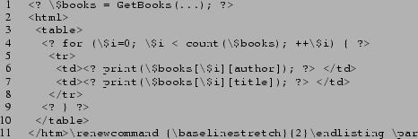

1
Greg J. Badros, Abhishek Parmar
InfoSpace, Inc., 601 108th Ave. NE, Suite 1200, Bellevue, WA 98004, USA
17 February 2003
badros@cs.washington.edu, aparmar@infospace.com
Restricted domain-specific programming language, static analysis, web server, templates, XML, XSLT, markup, WML, HTML.
Server-side markup generation is dominated by expressive and flexible general-purpose programming languages such as Java, Perl, and PHP. Ironically, the languages are then used in fairly restricted ways. For example, consider the PHP template in Fig. 1. The only constructs required by the template are a) some means of populating a data model from the back-end business logic (line 1); b) data-driven iteration (line 4); and c) simple expression evaluation to access parts of the data model (lines 6 and 7). The extra power provided by typical templating languages not only goes unused, but it also complicates analyses of the code such as proving that processing terminates.
|  |
Instead of embedding a general-purpose programming language, the
Extensible Templating Language is a domain-specific language
specifically tailored to the needs of generating markup. This
approach limits the capabilities of the front-end and helps separate
front-end presentation from back-end application logic. While other
languages might use an object-based data model to communicate between
tiers, ETL instead interacts only with web-services and exposes only
an XML data model.
is a domain-specific language
specifically tailored to the needs of generating markup. This
approach limits the capabilities of the front-end and helps separate
front-end presentation from back-end application logic. While other
languages might use an object-based data model to communicate between
tiers, ETL instead interacts only with web-services and exposes only
an XML data model.
Another problem with existing templating technologies is their mixing of two separate programming paradigms and syntaxes. JSP, for example, is implemented in terms of a pre-processing rewrite into a Java servlet. The precise analysis of an arbitrary JSP template necessarily requires full knowledge of both the rewrite rules and the semantics of Java. Worse, templating languages generally are ignorant of the rules of the markup being generated: the mistaken close tag on line 11 of Fig. 1 goes unnoticed by PHP, yet will break under an XHTML browser.
To combat the above problem, ETL directly intermingles literal markup elements and XML-based representations of programming constructs. By using XML as the surface syntax, standard XML tools such as XSLT can be used to perform analyses and transformations [1]. An example ETL template appears in Fig. 2 and is analogous to the PHP example from Fig. 1.
 |
An ETL template must be well-formed XML that is valid with respect to the language's XML Schema Definitions. This requirement catches a large class of programming errors very early in the development process without need for the ETL compiler at all. Those schemas are also used to support syntax coloring and completion of element and attribute names. ETL templates are processed within the context of an HTTP request and generate an HTTP response (including the markup document and headers).
ETL supports dynamic behaviours by means of primitives which are elements in the bl:* namespace. Primitives either output text to the current destination stream (initially the response document) or perform some side-effect (or both). For example the bl:set primitive assigns a variable a value without outputting any text, while the bl:http primitive outputs either http or https based on whether the current request is secure. The behaviour of a primitive is controlled by its attributes. Some primitives (e.g., http) are always empty while others are allowed to be non-empty and control the contained elements. For example, in:
<bl:if var="showcopyright"> (C) 2002 </bl:if>
the contents of the bl:if are output if and only if the variable's value is non-empty.
Many primitives derive their arguments not from individual attributes but from pairs of attributes that are together called a slot. For example, the bl:cr directive outputs a number of linefeeds determined by a slot called count which is specified by the mutually-exclusive attributes count and count-var. The count attribute has type xsd:integer and is used to provide a literal integer argument to the primitive. In contrast, the count-var attribute has type xsd:string and names a variable to evaluate at runtime. In both cases, the resulting value is used as the number of linefeeds to generate, but for @count that number is set statically while for @count-var it is determined dynamically. Other primitives include uri, redir, and set-cookie.
As with all imperative programming languages, ETL has the notion of variables that store values. Variables are assigned values (determined by executing the contained elements) using the bl:set primitive:
<bl:set var="baseuri"><bl:http/>://<bl:get var="hostname"/>/</bl:set>
After assignment, values are retrieved by referencing them by name in a slot or by copying them directly to the output stream using bl:get. There are numerous special reserved variables that may have side-effects and expose system-level details or request parameters such as #browsertype. Various other data are accessible to ETL templates via buckets. Buckets replace field references and accessor methods of distinguished objects in languages such as Java. For example, where a JSP developer might write <%= request.getHeader("User-Agent") %> the ETL developer accesses the #http bucket instead:
<bl:get var="#http/User-Agent"/>
A transformer is a streaming converter from one byte sequence to another. For example, the url-encode transformer converts ``hello world'' into ``hello+world''. Transformers can be used whenever a variable is being set (via bl:set) or accessed (via bl:get) using the transform attribute which specifies an ordered list of transformers to apply. For example:
<bl:get var="a" transform="trim urlencode"/>
results in writing out the value of the variable a after first eliminating leading and trailing whitespace and then URL-encoding the resulting trimmed string.
There are five primary means of control flow in ETL: 1) template selection dispatches to the most specific template on the basis of the current cobrand; 2) conditionals include bl:if and bl:choose/bl:when; 3) loops are allowed but are all data-driven or explicitly bounded; 4) exceptions transfer control non-locally; and 5) remote invocations allow calling other web services as subroutines.
Literal markup elements are copied directly to the response stream from the source template. We support the common need to conditionally include a tag by using a special bl:if-var attribute on an arbitrary literal result element:
<b bl:if-var="#pro/wantbold">text</b>
where the output of both the open and close b tags is controlled by the test of the single variable (and the contents of the b element are always executed). This technique also lets us factor out the guard, thus eliminating the possibility of a mismatch between the test used for the start tag and the one used for the end tag.
ETL permits fine-grained control over the whitespace that is meaningful via two orthogonal special attributes that are allowed on every XML element in source ETL documents: @bl:space-nodes and @bl:text-nodes. These attributes are inherited by child elements and their contents unless overridden.
Custom tags define new abstractions in terms of built-in primitives using an XSLT transformation rule. Those rules are applied to subtrees of the source template and rewrite that code to contain only the core language. This approach allows a great deal of flexibility in new abstractions without compromising our tight control over the limited behaviour we permit the presentation layer.
A byte-code compiler and runtime for the Extensible Templating Language is an integral part of InfoSpace's ETL Server, an ISAPI extension to IIS. The server supports configuration via special admin primitives, has a powerful HTTP-based reflection interface, and understands various special etl-* URL parameters that help with debugging (e.g., etl-decompile dumps a template's byte-codes instead of running it). InfoSpace's production web tree contains over sixty thousand ETL templates and the clusters of ETL Servers serve millions of requests per day.
LAML has similar goals to ETL, but takes an opposite approach: LAML
embeds the simpler markup languages in Scheme, an especially powerful
and expressive language. <bigwig> is another significant
research project that has similar goals. That work adds a first class
markup-fragment type to a conventional programming language. That
system is more aggressive in its verification of the well-formedness
of markup values: an iterative data-flow analysis bounds the possible
values which can then be confirmed to be valid.
The Extensible Templating Language leverages a domain-specific XML-based programming language intermingled with literal markup. By restricting the language, we preserve a better separation of front- and back-ends. By using XML, we simplify analyses, transformations, and make it easier to build supporting tools. The static checks ETLS performs reduce the need for testing and make development faster and less error-prone.
This document was generated using the LaTeX2HTML translator Version 99.2beta8 (1.46)
Copyright © 1993, 1994, 1995, 1996,
Nikos Drakos,
Computer Based Learning Unit, University of Leeds.
Copyright © 1997, 1998, 1999,
Ross Moore,
Mathematics Department, Macquarie University, Sydney.
The command line arguments were:
latex2html -split 0 -no_navigation -show_section_numbers etl-www2003-poster.tex
The translation was initiated by Greg Badros on 2003-03-21